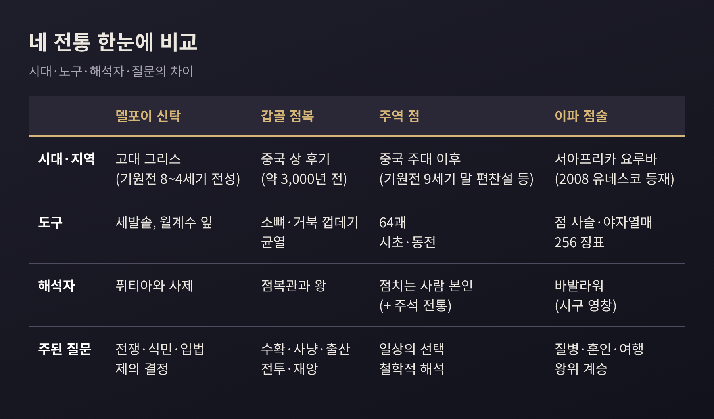
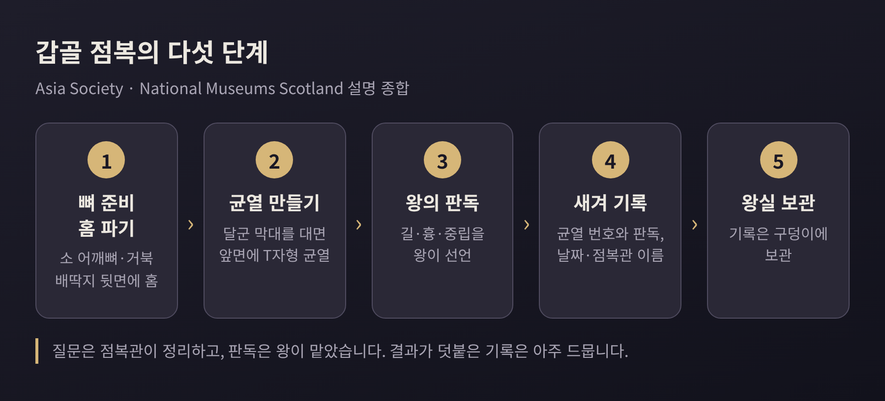
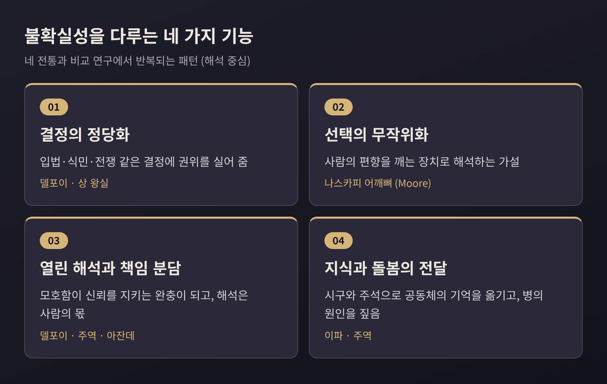

신탁과 점복의 사회적 기능, 델포이·갑골·주역·이파 비교

오늘은 신탁과 점복이 불확실한 미래 앞에서 사람들에게 무엇을 해 주었는지 이야기해 보려 합니다. 델포이 신탁, 상나라의 갑골 점복, 주역 점, 요루바의 이파(Ifá) 점술을 나란히 놓고 비교합니다.
먼저 결론을 적어 둡니다. 이 전통들은 미래를 맞히는 장치이기 전에, 결정을 내리고 그 결정에 정당성을 부여하는 제도였습니다. 책임을 나누고, 선택에 무작위성을 보태고, 때로는 공동체의 지식을 보존하는 일까지 맡았습니다.
이 글은 어느 전통의 진위나 예측력을 가리지 않습니다. 비교종교학의 눈으로 기능과 역사만 살펴봅니다.
■ 네 전통을 한눈에 보면
네 전통은 서로 다른 시대와 대륙에서 나왔습니다. 쓰는 도구도, 답을 읽는 사람도 다릅니다.

공통점도 있습니다. 모두 답을 곧바로 주지 않고, 정해진 절차를 거쳐 얻은 신호를 사람이 해석합니다. 그 해석의 자리에서 사회적 기능이 만들어집니다.
■ 델포이 신탁: 모호한 시가 도시의 결정을 받쳐 주다
델포이는 그리스 파르나소스 산 기슭의 아폴론 신전입니다. 전성기는 대략 기원전 8세기에서 4세기로 봅니다.
답을 내놓는 이는 퓌티아라 불린 여성이었습니다. 50세가 넘고, 남편과 떨어져 살며, 처녀의 옷차림을 했다고 전해집니다. 상담은 보통 델포이 달의 7일, 곧 아폴론의 생일로 여긴 날에 열렸습니다. 상담자는 후원자와 의례용 떡, 엄격한 기준을 통과한 제물 동물을 준비해야 했습니다.
퓌티아는 월계수 잎을 씹으며 지하 방의 세발솥에 앉았습니다. 그 발언은 사제들이 해석해 대체로 모호한 운문으로 남겼다고 Britannica는 설명합니다. 다만 이 부분에는 이견이 있습니다. 퓌티아가 직접 신탁을 발했으며 별도의 '시인'이 운문으로 고쳤다는 설은 고대 사료에 근거가 없다는 학술 논문(Maurizio)도 있습니다. 황홀경이 아니라 조용히 전달했다고 보는 학자도 있고, 지질 단층에서 나온 가스를 원인으로 보는 주장도 있으나 확정된 사실은 아닙니다.
신탁의 사회적 쓰임은 기록이 비교적 잘 남아 있습니다. 기원전 550년경 키레네는 통치를 개선할 방법을 물었고, 아르카디아의 만티네이아에서 입법자를 초청하라는 답을 받았습니다. 그리스 문화부 자료는 델포이가 도시의 입법에 권위를 주고 사회적 평화를 지키려 했으며, 신의 명령을 내리기보다 지도자들의 결정을 정당화하는 역할을 했다고 정리합니다. 식민 활동을 하는 이들도 아폴론의 자문과 승인을 구했습니다.
아테네의 사례는 더 구체적입니다. 기원전 460년경부터 335년경까지 아폴론이 아테네의 시민 단체에 준 답이 비문으로 남았습니다. 아스클레피오스에게 집과 정원을 바치는 일, 아레스와 아테나의 제단을 세우는 일이 주제였습니다. 질문은 종종 어떤 방안이 "더 이익이 되고 더 좋은가"를 묻는 형식이었습니다. 개인의 운명보다 공동체의 제의와 재산 문제가 중심이었던 셈입니다.
모호함도 기능이 됩니다. 리디아의 왕 크로이소스는 페르시아를 칠지 물었습니다. 큰 제국을 멸망시키리라는 답을 들었고, 공격에 나섰으나 무너진 것은 자기 제국이었습니다.
답이 열려 있으면 해석의 몫이 질문자에게 넘어갑니다. 결정을 신탁에 묻되, 결과의 무게는 결국 사람이 집니다.
■ 갑골 점복: 왕권과 기록이 만나다
상나라의 갑골 점복은 약 3,000년 전, 상 후기로 거슬러 올라갑니다. 소의 어깨뼈나 거북의 배딱지 뒷면에 홈을 파고 달군 막대를 대면 앞면에 T자형 균열이 생깁니다. 균열의 모양을 길, 흉, 중립으로 읽었습니다.
여기서 역할이 나뉘었습니다. 점복관이 질문을 정리하고 의례를 맡았고, 균열을 판정하는 일은 왕만 할 수 있었습니다. 마지막 아홉 왕을 섬긴 점복관만 해도 이름이 알려진 사람이 120명이 넘습니다.
질문의 범위는 넓었습니다. 다음 열흘 동안 재앙이 없을지, 사냥과 수확, 출산, 적의 침입, 전투의 승리를 물었습니다. 왕의 치통이 어디서 왔는지, 가뭄의 원인이 무엇인지도 물었습니다. 어떤 기록에는 한 번에 거북 껍데기 500~1,000개를 쓴 규모가 나옵니다.

비문의 기본 구조는 날짜와 점복관의 이름, 하늘에 묻는 주제, 왕의 판독, 그리고 아주 드물게 나중에 덧붙인 결과입니다. 학계에서는 이 주제를 '질문'으로 볼지 논쟁이 있습니다. Keightley는 'charge', 곧 명령이나 위임에 가까운 말을 선호했습니다.
기능을 해석하는 시각도 갈립니다. Keightley는 점복이 상 왕실 생활의 중심이며 정치적, 종교적 정당성의 토대였다고 보았습니다. 스코틀랜드 국립박물관은 해석이 주관적이어서 왕의 뜻을 뒷받침하는 데 쓰였을 가능성을 언급합니다. 기록이 구덩이에 왕실 기록으로 보관되었다는 점도 같은 맥락에서 읽힙니다.
이 뼈들은 또 하나의 유산을 남겼습니다. 1899년 왕이룽이 약재로 팔리던 '용골'의 무늬가 고대 문자임을 알아본 일은 널리 알려져 있습니다. 다만 출토된 수량은 집계 방식에 따라 크게 다르고, 서로 다른 글자는 약 5,000자로 보되 확실히 해독된 것은 그 일부입니다.
■ 주역 점: 점복서에서 지혜의 책으로
주역은 오경의 하나입니다. 전통적으로 본문은 주나라 문왕에게 돌립니다. 반면 샤우네시는 지금의 형태가 기원전 9세기 말에 편찬되었다고 추정합니다. 기원을 두고 두 가지 설이 병존하는 셈입니다.
원리는 간결합니다. 이어진 선(양)과 끊어진 선(음)을 여섯 층 쌓아 64괘를 만듭니다. 효마다 안정과 변화를 가려 보면 4,096가지 상황이 나옵니다. 시초(蓍草) 50개를 쓰는 방법은 기원전 3세기경 계사전에 기록되었고, 동전을 쓰는 방법은 당나라 때 널리 퍼졌습니다.
Britannica는 주역의 언어가 모호해 독자에게 해석의 자유를 준다고 설명합니다. 여기에 주석이 더해지며 성격이 달라졌습니다. 기원전 136년 한 무제는 주역을 경전 가운데 으뜸으로 칭했고, 1973년 마왕두이에서 나온 판본에는 공자가 이 책을 점복서이기 이전에 지혜의 원천으로 받아들였다는 취지의 주석이 있습니다.
예전엔 점복의 매뉴얼이었습니다. 지금은 인간과 자연을 하나의 체계로 잇는 철학의 텍스트로 더 널리 읽힙니다. 이 이행은 점복이 사라진 것이 아니라, 같은 도구가 다른 기능으로 옮겨 간 사례로 볼 수 있습니다.
■ 이파 점술: 시구로 이루어진 공동체의 기억
이파는 서아프리카 요루바 공동체의 점술입니다. 2008년 유네스코 인류무형문화유산 대표목록에 올랐습니다. 점술사는 바발라워라 부르며, 영매가 아니라 기호 체계를 해석하는 사람입니다.
방법은 이렇습니다. 점술사는 점 사슬(opele)을 던지거나 16개의 야자열매를 다룹니다. 이중 4획의 기호로 256개의 징표가 나옵니다. 징표마다 에세(ese)라는 시구가 속해 있습니다. 유네스코에 따르면 오두 하나에 약 800개의 시구가 있고, 그 총수는 계속 늘어나 정확히 알 수 없습니다.
점술사는 의뢰인의 문제에 맞는 시구를 영창하고 풀이합니다. 의뢰인은 이어서 처방된 제물을 수행합니다. 질병을 진단하는 일, 혼인과 여행의 길흉, 왕위 계승자를 정하는 일까지 주제가 폭넓었습니다. 도제 수련은 15년에서 30년 이상 걸린다고 합니다.
여기서 점술은 공동체의 기억 장치입니다. 시구에는 신화, 속담, 노래, 찬가, 윤리와 철학, 역사 인물이 담겨 있어 '지식의 백과'로 불립니다. 점을 치는 일이 곧 공동체의 지식을 현재의 문제에 불러오는 일이 되는 것입니다.
한계와 변화도 짚어 둘 만합니다. 유네스코는 식민 통치와 종교적 압력에 따른 차별, 사제들의 고령화, 젊은 세대의 관심 저하를 위협 요인으로 꼽습니다. 한편 요루바에서 갈라진 종교들은 아메리카 대륙에서 자리를 잡았고, 이파는 디아스포라에서도 이어지고 있습니다.
■ 불확실성을 다루는 네 가지 기능
네 전통을 겹쳐 보면 반복되는 기능이 보입니다. 아래는 소스에서 확인한 사실을 바탕으로 한 정리이며, 어디까지나 학계의 해석 중 일부입니다.

첫째, 결정의 정당화입니다. 델포이는 입법과 식민의 결정에 권위를 실었고, 상나라에서는 왕의 판독이 정치적 정당성의 토대였습니다.
둘째, 무작위화입니다. 캐나다 래브라도의 나스카피 사냥꾼은 카리부 어깨뼈를 구워 사냥 방향을 정했습니다. 인류학자 Moore는 사냥 패턴이 고정되면 동물이 이를 예측하고 쫓긴 동물은 경계하게 되므로, 균열이 사람의 편향을 깨는 장치로 작동했다고 해석했습니다. 이것은 연구자의 가설이며 나스카피 자신의 설명과는 다릅니다. 같은 뼈를 상나라는 영계로 가는 통로로 보았다는 대비도 자주 언급됩니다.
셋째, 열린 해석과 책임의 분담입니다. 아잔데의 독 신탁은 닭의 생사로 답을 읽되 두 번 검사하고, 두 결과가 서로 달라야 유효로 쳤습니다. 신탁이 틀리지 않는다고 믿으면서, 오류는 질문의 틀이나 독의 용량 탓으로 돌렸습니다. 델포이의 모호한 시나 주역의 열린 언어와 함께 보면, 해석의 공간이 신뢰를 유지하는 완충이 되었다고 볼 수 있습니다.
넷째, 지식과 돌봄의 전달입니다. 이파의 시구는 공동체의 윤리와 역사를 실어 나르고, 점술사는 질병의 원인을 진단하며 제물을 처방합니다. 주역은 점복에서 출발해 철학으로 읽히게 되었습니다.
정리하면 이렇습니다. 불확실성은 없앨 수 없지만, 절차를 거치면 함께 감당할 수 있는 모양이 됩니다. 뼈의 균열도, 월계수 잎을 씹은 여사제의 발언, 야자열매의 조합도 사람이 결정을 내리기 전에 거치는 공통의 통로였습니다.
"신탁은 미래를 말하기보다, 결정을 함께 짊어지게 했다."
이 한 줄이 이 글에서 남기고 싶은 생각입니다. 지금 우리가 중요한 선택 앞에서 누군가의 조언이나 정해진 절차를 찾는 마음은 그때와 얼마나 다를까요. 저는 크게 멀지 않다고 생각합니다.